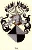

Antavla
7984430 Niels Stigesen Hak (af Riis)

Far:
Stig Pedersson Hak af Riis (<1300 - 1351)
Mor:
Herlufsdatter Grubbe af Saerslev
Född:
före 1335 Riis, Holbaeck, Danmark.
Död:
omkring 1380.
Barn med ?
Barn:
Kristine Nilsdotter Ulfeldt (Hak) (1350? - >1380)
Personhistoria
Årtal
Ålder
Händelse
<1300
Fadern
15968860 Stig Pedersson Hak af Riis
föds före 1300 Skåne, Sverige
<1335
Födelse före 1335 Riis, Holbaeck, Danmark
1350?
Dottern
3992215 Kristine Nilsdotter Ulfeldt (Hak)
föds omkring 1350 Riis, Ordrup, Själland, Danmark
1351
Fadern
15968860 Stig Pedersson Hak af Riis
dör 1351 Riis, Ordrup, Själland, Danmark
1380?
Död omkring 1380
>1380
Dottern
3992215 Kristine Nilsdotter Ulfeldt (Hak)
dör efter 1380 Terlöse, Danmark
<1481
Barnbarnet
1996107 Kristine van Hufn Harvigsdatter Bryske til Kragerup
dör före 1481
[1]
Källor
[1]
Johan Lindqvist